Recorrido por paradas
La red parada por parada, desde el data center de Retiro hasta los talleres de Rosario.
TA048 Redes · Ramal Retiro–Rosario Norte
Une el Centro de Control de Operaciones (CCO) de Retiro con Campana, San Pedro, San Nicolás, la terminal y los talleres de Rosario, y los 193 pasos a nivel del ramal.
Cuatro recorridos interactivos. Cada uno se abre dentro de esta página.
La red parada por parada, desde el data center de Retiro hasta los talleres de Rosario.
Troncal de servicios, rack de estación y nave de Talleres Rosario, animados.
Cortes de fibra en cualquier punto de la vía y conmutación SD-WAN al respaldo.
LAN de Campana, San Pedro y San Nicolás, llegada de los pasos a nivel, QoS y direccionamiento.
La WAN transporta datos (despacho, señalización, venta de pasajes), voz (VoIP de despacho y administrativa) y video (cámaras hacia el CCO).
Diseñar una WAN regional segura, disponible y de alto rendimiento. Se presupuesta una red nueva desde cero.
| Sede | Rol en la red |
|---|---|
| Estación Retiro | Centro de Control de Operaciones (CCO) y data center central. |
| Estación Campana | Estación regional (recibe además 6 pasos a nivel cercanos por fibra). |
| Estación San Pedro | Estación regional (recibe 8 pasos a nivel cercanos por fibra; única sede sin nodo REFEFO). |
| Estación San Nicolás | Estación regional (recibe 11 pasos a nivel cercanos por fibra). |
| Estación Rosario Norte | Talleres y terminal (recibe 12 pasos a nivel cercanos por fibra; sede de mayor demanda). |
| Pasos a nivel (193) | OT/SCADA: sensores, barreras y cámara en VLAN OT. 37 a <5 km van por fibra al MPLS de su estación; 156 por router 5G/Internet fijo con VPN IPSec al CCO. |
| Sede | Personas | Usuarios a la vez | Teléfonos IP | Llamadas VoIP pico | Cámaras | Cámaras en vivo al CCO | Usuarios Internet a la vez |
|---|---|---|---|---|---|---|---|
| Retiro (CCO) | 200 | 100 | 160 | 40 | 40 | locales | 70 |
| Campana | 30 | 15 | 30 | 8 | 12 | 4 | 10 |
| San Pedro | 25 | 12 | 24 | 6 | 10 | 4 | 8 |
| San Nicolás | 40 | 20 | 40 | 10 | 16 | 6 | 14 |
| Rosario | 120 | 60 | 100 | 25 | 30 | 10 | 40 |
| Total | 415 | 207 | 354 | 89 | 108 | 24 | 142 |
| Grupo | Qué incluye | Prioridad |
|---|---|---|
| Datos OT | Estados de señales y enclavamientos, sensores de vía, pasos a nivel, SCADA de energía, posición de trenes | Crítica (1.ª) |
| Voz | Radio entre maquinistas y CCO, telefonía entre sedes para advertir problemas | Alta |
| Video | Cámaras de vías, andenes y pasos a nivel | Media |
| Datos IT | Venta de pasajes, ERP, mantenimiento, correo corporativo | Media |
| Gestión | Monitoreo de equipos de red (SNMP, NetFlow) | Media |
| Internet | Navegación y Wi-Fi, con salida local en cada sede (no usa la WAN) | Best effort (última) |
Secciones 5, 6 y 7 del documento
Cálculo de tráfico por servicio, enlaces recomendados, topología física/lógica, VLANs, OSPF y BGP.
tráfico de cada servicio = cantidad simultánea × consumo unitario.
Se suman los servicios que viajan por la WAN (Internet sale localmente), se agrega un 30 % de margen de crecimiento
y se redondea al enlace comercial siguiente. Por gabinete de paso a nivel: 0,065 Mbps OT + 0,035 Mbps gestión + 4 Mbps video en ráfaga (10 % simultáneo = 20 gabinetes).
| Sede | WAN +30 % | Enlace principal (MPLS) | Crítico +30 % | Respaldo (IPSec) | Internet +30 % | Internet local |
|---|---|---|---|---|---|---|
| Campana (+6 PaN) | 34,2 | 50 Mbps | 18,6 | 20 Mbps | 19,5 | 20 Mbps |
| San Pedro (+8 PaN) | 32,6 | 50 Mbps | 17,0 | 20 Mbps | 15,6 | 20 Mbps |
| San Nicolás (+11 PaN) | 44,2 | 50 Mbps | 23,4 | 30 Mbps | 27,3 | 30 Mbps |
| Rosario (+12 PaN) | 83,8 | 100 Mbps | 52,6 | 100 Mbps | 78,0 | 100 Mbps |
| CCO Retiro | 194,7 | 200 Mbps | 111,5 | 200 Mbps (otro prov.) | 136,5 | 200 Mbps* |
* Los 156 pasos a nivel restantes llegan por 5G o Internet fijo al concentrador VPN del CCO con 103,5 Mbps (+30 %), por lo que se recomienda un acceso dedicado de 200 Mbps en el CCO separado del Internet de usuarios. Durante una caída del enlace principal se cortan las cámaras en vivo (siguen grabando localmente) y por el respaldo IPSec solo viaja lo crítico (OT, voz, datos IT y gestión).
| Sede | Datos IT | Voz | Video | Datos OT | Gestión | Total WAN | +30 % margen |
|---|---|---|---|---|---|---|---|
| Campana | 6 | 0,7 | 8 | 5 | 2 | 21,7 | 28,2 |
| San Pedro | 4,8 | 0,5 | 8 | 5 | 2 | 20,3 | 26,4 |
| San Nicolás | 8 | 0,9 | 12 | 6 | 2 | 28,9 | 37,6 |
| Rosario | 24 | 2,2 | 20 | 10 | 3 | 59,2 | 77,0 |
| Pasos a nivel (×193) | 0 | 0 | 80 | 12,5 | 6,8 | 99,3 | 129,1 |
| CCO Retiro (suma WAN) | 42,8 | 4,3 | 128 | 38,5 | 15,8 | 229,4 | 298,2 |
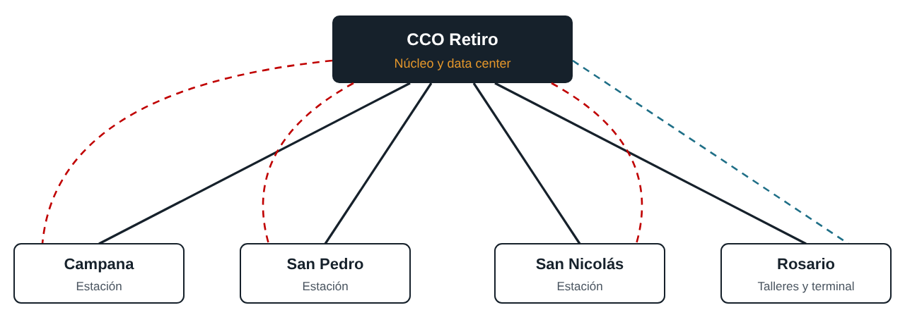
Ampliar figura| Área | Opciones seleccionadas |
|---|---|
| Enlaces WAN | MPLS o enlaces dedicados (principal); SD-WAN con VPN IPSec sobre Internet (respaldo). |
| Equipamiento | Routers de borde, switches de capa 3 y firewalls en cada sede. |
| Enrutamiento | OSPF dentro de la red propia y eBGP con el proveedor (EIGRP descartado). |
| QoS | Prioridad estricta para voz de despacho y datos OT/señalización sobre video y datos IT. |
| Monitoreo | SNMP para disponibilidad y NetFlow para análisis de tráfico. |
| Seguridad | Seguridad perimetral, segmentación por VLAN, control de acceso al video; cámaras PoE. |
| VLAN | Uso | Prioridad QoS |
|---|---|---|
10 | Datos IT (venta de pasajes, ERP, correo) | Media |
20 | Voz (VoIP de despacho y administrativa) | Alta |
30 | Video CCTV | Media |
40 | Datos OT (señalización, sensores, pasos a nivel, SCADA) | Crítica |
50 | Wi-Fi e Internet | Best effort |
99 | Gestión de equipos | Alta |
10.S.V.0/24 + P2P 172.16.0.0/24 (/30)
| Sede | Red propuesta | Área OSPF |
|---|---|---|
| CCO Retiro | 10.10.0.0/16 | 0 (backbone) |
| Campana | 10.20.0.0/16 | 1 |
| San Pedro | 10.30.0.0/16 | 2 |
| San Nicolás | 10.40.0.0/16 | 3 |
| Rosario | 10.50.0.0/16 | 4 (5 para Talleres) |
| Pasos a nivel OT | 10.60.0.0/16, un /28 por paso a nivel; los cercanos a una estación usan 10.60.S.0/24 (Campana 10.60.20, San Pedro 10.60.30, San Nicolás 10.60.40); los 156 con router propio y VPN usan 10.60.128.0/20 | Zona OT-PaN del firewall de su sede |
topologia-fisica.png (página 4 del documento).Sección 8 y 9 · Relevamiento Remoto
Datos oficiales de ENACOM, nodos REFEFO de ARSAT, relevamiento en OpenStreetMap e infraestructura interna de cada estación.
| Pregunta | Fuente | Qué se obtiene |
|---|---|---|
| Proveedor por sede | ENACOM (datos abiertos) | Tecnologías y velocidades presentes por localidad |
| Troncal de fibra cercana | ARSAT (puntos de conexión REFEFO) | Existencia de nodo para enlace principal |
| Respaldo móvil | Mapas de Claro, Personal, Movistar o nPerf | Calidad de cobertura 4G/5G en cada estación |
| Traza entre estaciones | OpenRailwayMap (datos de OpenStreetMap) | Pasos a nivel, señales y desvíos por tramo |
| Servicio actual | Horarios de Trenes Argentinos | Frecuencia para dimensionar el tráfico |
Elegí una estación.
Opción principal: Fibra de operador o REFEFO. Opción respaldo: Segundo operador por otra traza física. Operadores específicos de la cabecera a confirmar.
Nodo REFEFO: Sí (también Zárate, al lado). Principal: Fibra de operador o REFEFO. Respaldo: Cablemódem (HFC) de otro operador o 4G.
Nodo REFEFO: No (los más cercanos están en Baradero y Ramallo). Es la sede con mayor riesgo de aislamiento: requiere tramo extra hasta operador local/nodo vecino y respaldo obligatorio por 4G o radioenlace por un camino físico distinto.
Principal: Fibra de operador o REFEFO. Respaldo: Cablemódem (HFC) de otro operador o 4G.
Nodo REFEFO: Sí (2 nodos). Principal: Fibra de operador o REFEFO. Respaldo: Segundo operador por otra traza física.
| Estación | Andenes | Vías | Edificio (aprox.) | Extremo más lejano | PaN < 1,5 km | Datos conocidos |
|---|---|---|---|---|---|---|
| Retiro (Mitre) | 8 de ~255 m | Terminal varias vías | Terminal grande | ~290 m | No aplica (urbano) | Centro monitoreo cámaras Trenes Arg.; señalamiento renovado (marzo 2026); Wi-Fi cabecera |
| Campana | 2 de ~245 m | 4 | ~74 × 18 m | ~130–145 m | 3 (310, 320, 520 m) | Sin datos de obras recientes |
| San Pedro | 2 (142 y 177 m) | 6 (con playa) | ~21 × 27 m | ~95 m | 4 (270, 280, 1190, 1290 m) | Renovada en 2017: boleterías, andenes, iluminación |
| San Nicolás | 2 de ~185 m | 4 | ~43 × 34 m | ~100 m | 5 (240, 540, 830, 1090, 1230 m) | Renovada en 2017, con pasos a nivel nuevos |
| Rosario Norte | 3 (217 a ~330 m) | 15 (con playa) | ~110 × 20 m | ~135–220 m | 8 (incluye otras líneas) | Terminal del servicio |
Amarillo: andenes · Naranja: pasos a nivel · Celeste: radio práctico de 90 m para UTP · Escala: 100 m.
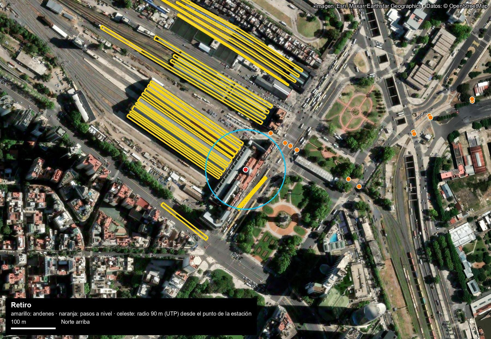
Ampliar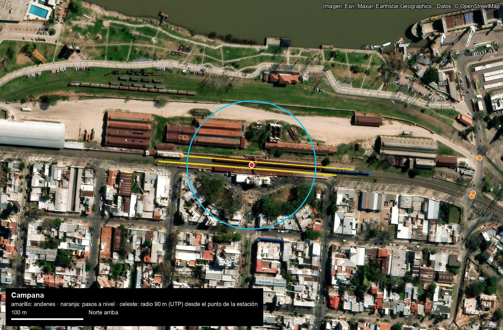
Ampliar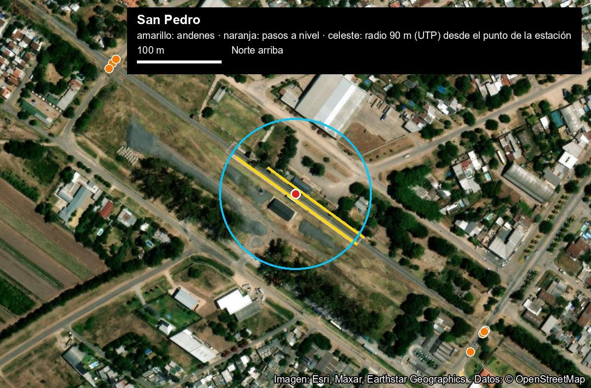
Ampliar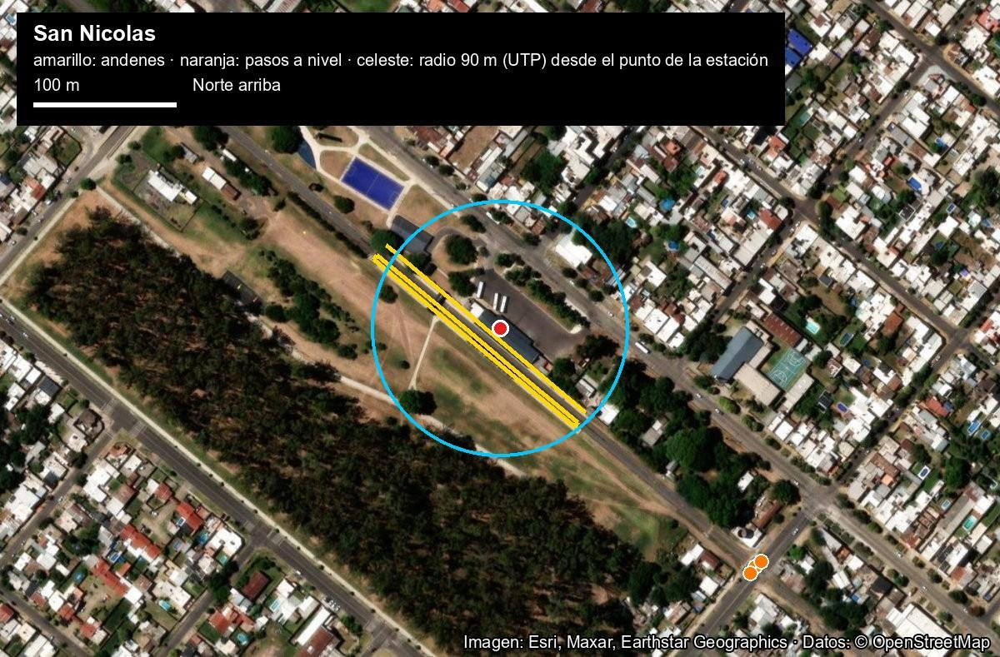
Ampliar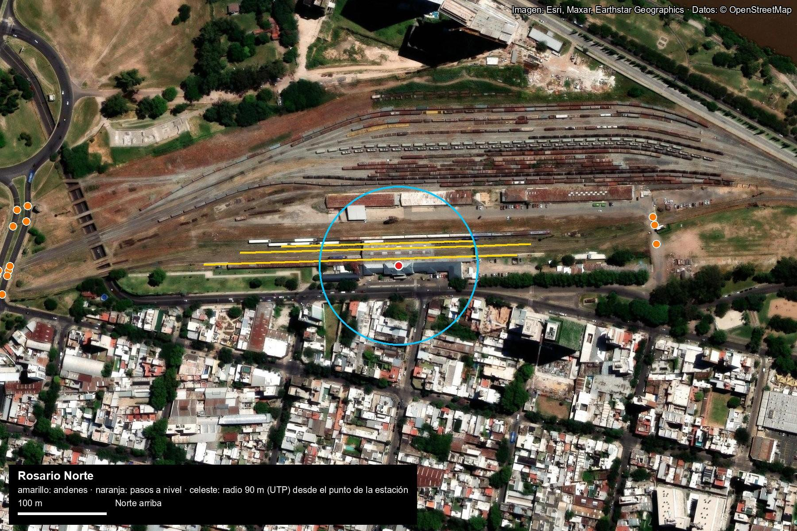
Ampliar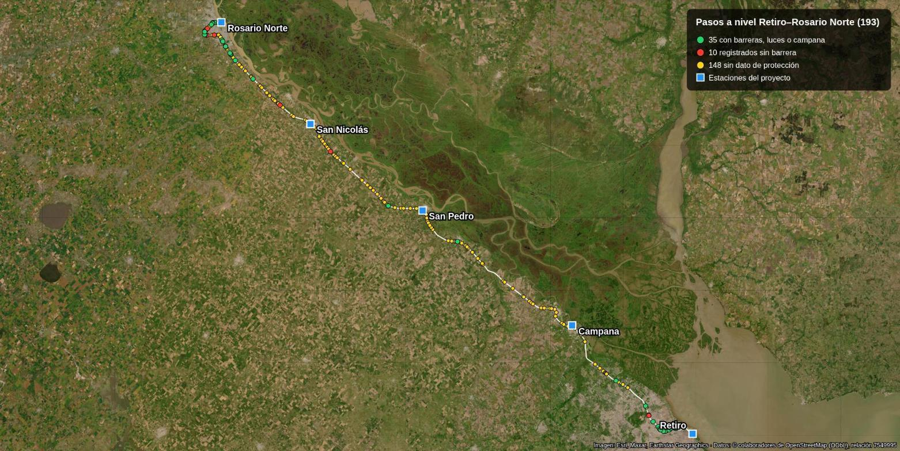
AmpliarInforme Preliminar OT/SCADA · Páginas 16–39
Preparación de la red para automatizar los 193 pasos a nivel y operar a 150 km/h (~3 h Retiro–Rosario), normativa SETOP 7/81 y presupuesto CAPEX/OPEX.
| Tramo | Pasos a nivel | Peatonales |
|---|---|---|
| Retiro–Campana | 37 | 39 |
| Campana–San Pedro | 46 | 7 |
| San Pedro–San Nicolás | 40 | 9 |
| San Nicolás–Rosario Norte | 70 | 40 |
| Total línea | 193 | 95 |
| Velocidad máx. | Anticipo 25 s | Anticipo 30 s |
|---|---|---|
| 60 km/h | 420 m | 500 m |
| 90 km/h | 625 m | 750 m |
| 120 km/h | 835 m | 1.000 m |
| 150 km/h (diseño OT) | 1.040 m | 1.250 m |
| 160 km/h (tope ADIF) | 1.110 m | 1.330 m |
Diagramas extraídos del informe preliminar: paso a nivel tipo, piloto de 20 PaN, gabinete de borde y línea completa.
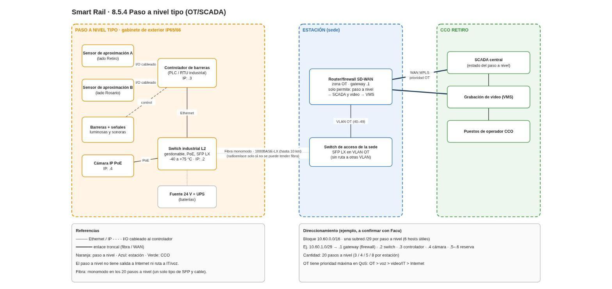
Ampliar esquema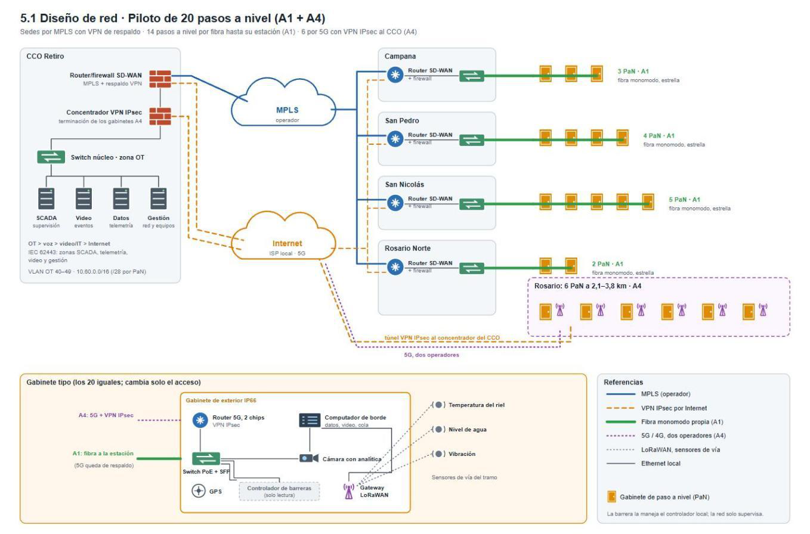
Ampliar esquema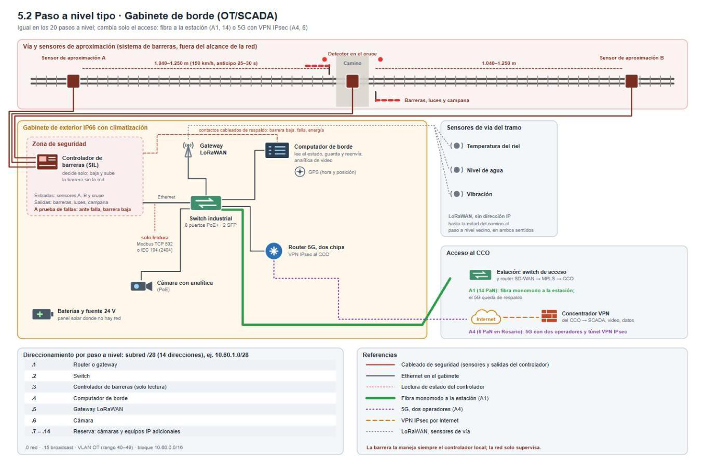
Ampliar esquema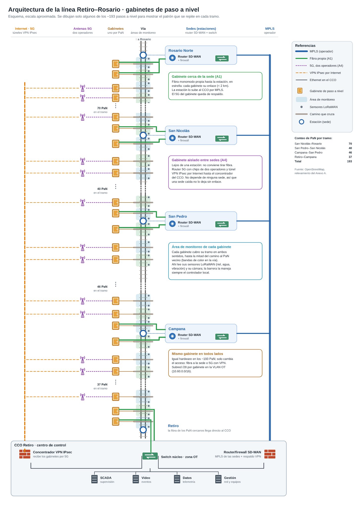
Ampliar esquema| Flujo | Tipo | Ancho de banda |
|---|---|---|
| Estado del controlador (IEC 104 / Modbus TCP) | Continuo | 10 kbps |
| Telemetría LoRaWAN (riel, agua, vibración) y gabinete | Continuo | 5 kbps |
| Reserva para nuevos sensores | Continuo | 50 kbps |
| Gestión, hora (NTP), registros y alarmas | Continuo | 35 kbps |
| Subtotal continuo por gabinete | 0,1 Mbps | |
| Video cámara IP (clip evento / vivo a pedido H.265 1080p) | Ráfaga (10% sim.) | 4 Mbps |
| Propuesta | Conexión | A favor | En contra |
|---|---|---|---|
| A. MPLS + fibra local (A1/A2) | Fibra local hasta estación; MPLS al CCO | Bajo CAPEX; usa diseño actual | Solo sirve cerca de estaciones (<2–5 km) |
| A4. Gabinete de borde | VPN IPSec por cable/fibra/5G dual-SIM | Sin zanjeo; cada cruce independiente; escala a 193 | Depende de redes públicas; abono mensual por gabinete |
| B. Fibra propia (B2 anillo) | ~300 km traza propia (OT + IT separados) | Gran capacidad, bajo OPEX, control propio | CAPEX alto |
| C. Radioenlaces | Microondas entre sedes y P-MP | Camino físico independiente del cable | Línea de vista, torres y espectro licenciado |
| Concepto | Cant. | Unitario | Total USD |
|---|---|---|---|
| Gabinete de borde completo (9 ítems) | 193 | 9.800 | 1.891.400 |
| Fibra monomodo A1 (hasta 5 km de sedes) | ~31 km | 12.000 | 372.000 |
| Energía solar p/ gabinetes sin red (20 %) | 39 | 3.000 | 117.000 |
| Cluster VPN redundante + plataforma CCO | 1 | 60.000 | 60.000 |
| Ingeniería y relevamiento de sitios | 193 | 300 | 57.900 |
| Subtotal | 2.498.300 | ||
| Contingencia (15 %) | 374.745 | ||
| Total CAPEX | 2.873.045 |
| Componente del gabinete / OPEX | USD |
|---|---|
| Computador de borde industrial (-40 a +70 °C) | 1.200 |
| Router 5G industrial dual-SIM (ref. Teltonika RUTX50) | 600 |
| Switch industrial 8× PoE+ y 2× SFP | 500 |
| Cámara IP con analítica | 700 |
| Gateway LoRaWAN exterior + 4 sensores de vía | 1.700 |
| Gabinete IP66 climatizado, GPS, baterías 24 V e instalación | 5.100 |
| Total por gabinete instalado | 9.800 |
| OPEX anual: datos 5G (156×$30 + 37×$5/mes) | 58.380/año |
| OPEX anual: mant. equipos (8%), fibra ($500/km), licencias, repuestos | 238.199/año |
| Total a 3 años (CAPEX + 3 × OPEX) | 3.762.782 |
| Variable | TAVe 2008 | Esta propuesta (150 km/h) |
|---|---|---|
| Velocidad | 320 km/h máx. (250 prom.) | 150 km/h límite operativo |
| Viaje Retiro–Rosario | 85 min | ~3 h (vs. 7 h 34 min actuales) |
| Vía y pasos a nivel | Nueva exclusiva; PaN eliminados | Existente mejorada; PaN automatizados |
| Costo referencia | USD 4.000 M (~USD 5,6 M/km) | ~USD 2–4 M/km vía + esta red OT |
| Estado | Cancelado en 2012 | Propuesta habilitante reutilizable |
Anexo D (exploración fuera de alcance): AP Wi-Fi 6 por coche + router de cabina combinando 5G multi-operador y satélite de órbita baja como respaldo, totalmente aislado de la red OT.
Anexo E (prototipo paso a nivel tipo): maqueta isométrica interactiva con secuencia de tren (tecla Espacio), selección de piezas y conmutación A1/A4.
Planificación del TP · Páginas 12–15
Matriz completa del índice propuesto del trabajo práctico, pendientes por capítulo y asignación por integrante.
| Sección | Estado | Qué falta / Observación | Responsable |
|---|---|---|---|
| 1. Descripción general | Hecho | — | — |
| 2. Justificación | Hecho | — | — |
| 3. Objetivos | Hecho | — | — |
| 4. Alcance | Parcial | Actualizar qué entra en el alcance del CAPEX según diagnóstico | Lázaro |
| 4.1 Personas y usuarios | Parcial | Columnas de dispositivos | Cada dueño, su sede |
| 4.2 Grupos de tráfico | Hecho | — | — |
| 5. Diagnóstico (antes 8) | Rehacer | Recortar a 1 página: metodología, resumen y hallazgos | Lázaro |
| 6. Dimensionamiento de ancho de banda | Hecho | — | — |
| 6.1 Enlaces por sede | Hecho | — | — |
| 7. Tecnologías consideradas | Hecho | — | — |
| 8.1 Topología física | Hecho | Actualizar la figura al final | Feli |
| 8.2 Topología lógica (VLAN) | Corregir | «Cinco» por seis VLANs y el rango OT | Facu |
| 8.3 Direccionamiento y enrutamiento | Parcial | Regla /24, pasos a nivel y ABR/BGP | Facu |
| 8.4 Servicios del data center | Falta | Todo | Feli |
| 8.5.1 LAN Retiro | Falta | Todo | Feli |
| 8.5.2 LAN Rosario | Falta | Todo | Trini |
| 8.5.3 LAN sede menor | Falta | Todo | Facu |
| 8.5.4 Paso a nivel OT/SCADA | Falta | Todo (cubierto en informe preliminar pp. 16–39) | Joa |
| 8.6 Resiliencia y continuidad | Falta | Todo | Trini |
| 9.1 Presupuesto CAPEX | Falta | Todo | Lázaro |
| 9.2 Presupuesto OPEX | Falta | Todo | Lázaro |
| 9.3 Costo total a 3 años | Falta | Todo | Lázaro |
| 10. Conclusiones | Actualizar | Revisar al final | Joa |
| Anexo A: Relevamiento de estaciones | Hecho | Mover ahí la tabla y las imágenes de la sección 8 | Lázaro |
| Anexo B: Fuentes | Hecho | Unificar las fuentes en una lista | Joa |
Servicios del DC (venta, ERP, VoIP, video, SCADA, DNS/DHCP/AD, SNMP/NetFlow), LAN redundante (160 tel, 40 cám), subredes 10.10.V.0/24, figura 8.1 y 4 slides.
LAN de Rosario (talleres, SCADA, 100 tel, 30 cám, gabinete andén, 8 PaN), subredes 10.50.V.0/24, 3 escenarios de caída (enlace, equipo Retiro, DC) y 2 slides.
LAN tipo para Campana, San Pedro y San Nicolás, llegada de 6/8/11 pasos a nivel por fibra (switch de agregación OT, bandeja de fibra, zona OT-PaN del firewall), respaldo 4G/radio en San Pedro, direccionamiento, OSPF ABR + BGP, QoS, BOM y 2 slides.
Diseño tipo PaN aislado (10.60.0.0/16, VLAN OT), fibra multimodo <550 m / monomodo o radio, 20 PaN piloto (3/4/5/8), integración y 4 slides.
Recortar diagnóstico a 1 página, mover tabla/imágenes al Anexo A, confirmar 2 tipos de presupuesto y consolidar CAPEX, OPEX y TCO a 3 años (3 slides).